CERTIFICATES
2020
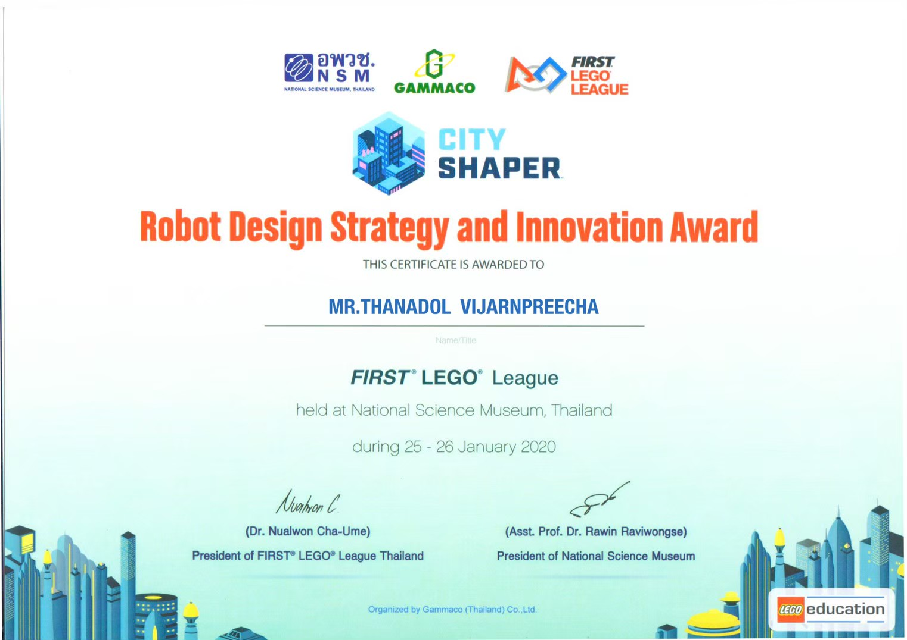
รางวัลชนะเลิศ
Robot Design Strategy and Innovation Award การออกแบบหุ่นยนต์(กลยุทธ์ยอดเยี่ยม) จาก First LEGO League Thailand 2019/2020
เมื่อวันที่ 25-26 มกราคม พ.ศ.2563
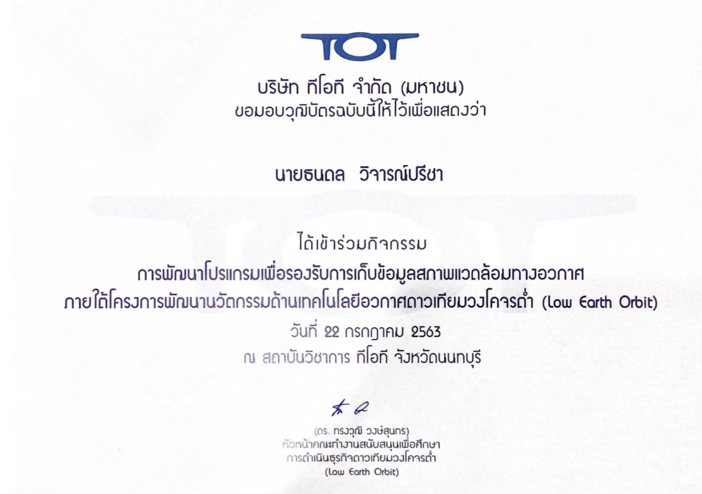
เข้าร่วมกิจกรรม
การพัฒนาโปรแกรมเพื่อรองรับการเก็บข้อมูลสภาพแวดล้อมทางอากาศภายใต้โครงการพัฒนานวัตกรรมด้านเทคโนโลยีอวกาศดาวเทียมวงโคจรต่ำ
(Low Earth Orbit) เมื่อวันที่ 22 กรกฎาคม พ.ศ.2563
2021
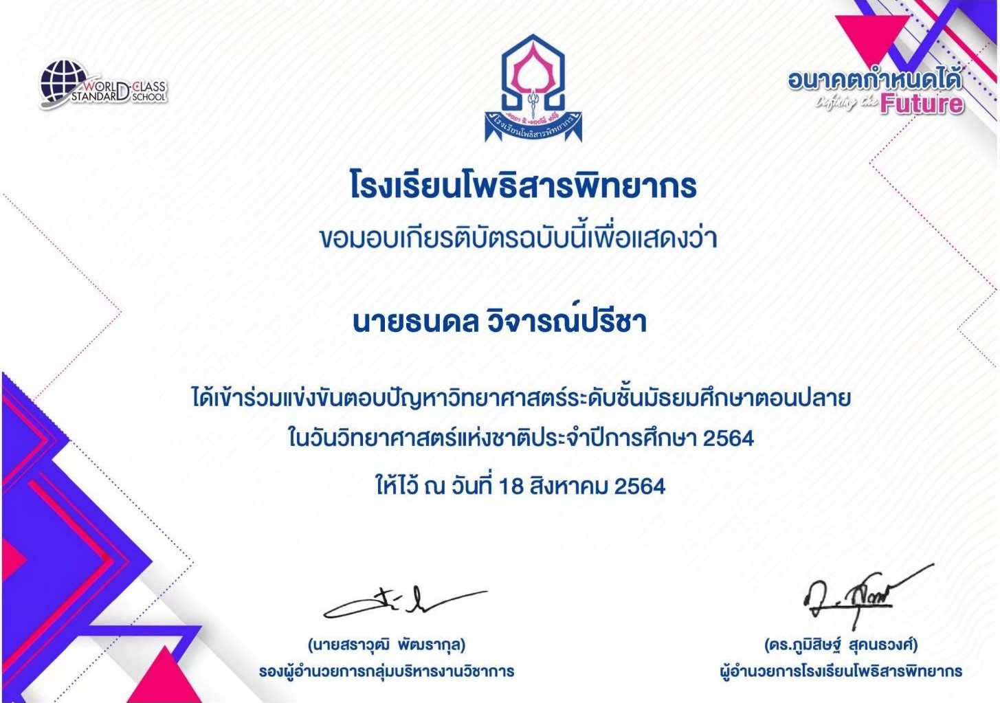
เข้าร่วมการแข่งขัน
การตอบปัญหาวิทยาศาสตร์ระดับชั้นมัธยมศึกษาตอนปลายในวันวิทยาศาสตร์แห่งชาติประจำปีการศึกษา 2564
เมื่อวันที่ 18 สิงหาคม พ.ศ.2564
.jpg)
ผ่านการอบรมโครงการ
ค่ายออนไลน์ "Smart Plant Factory" แผนการเรียนเตรียมวิทยาศาสตร์-คอมพิวเตอร์เป็นโครงการในความร่วมมือระหว่างงานคอมพิวเตอร์ โรงเรียนโพธิสารพิทยากร
และสวทช. ระหว่างวันที่ 27-29 กันยายน พ.ศ.2564
2022
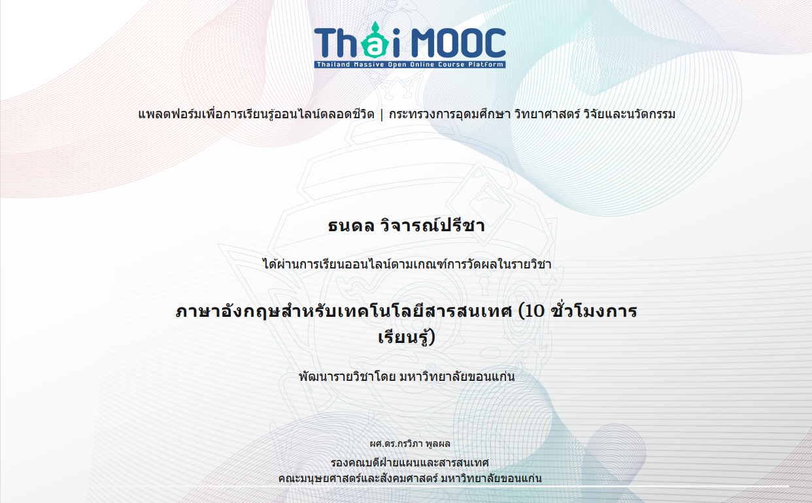
ผ่านการอบรมหลักสูตร
ภาษาอังกฤษสำหรับเทคโนโลยีสารสนเทศ(10 ชั่วโมงการเรียนรู้) พัฒนารายวิชาโดย มหาวิทยาลัยขอนแก่น
เมื่อวันที่ 16 มีนาคม พ.ศ.2565
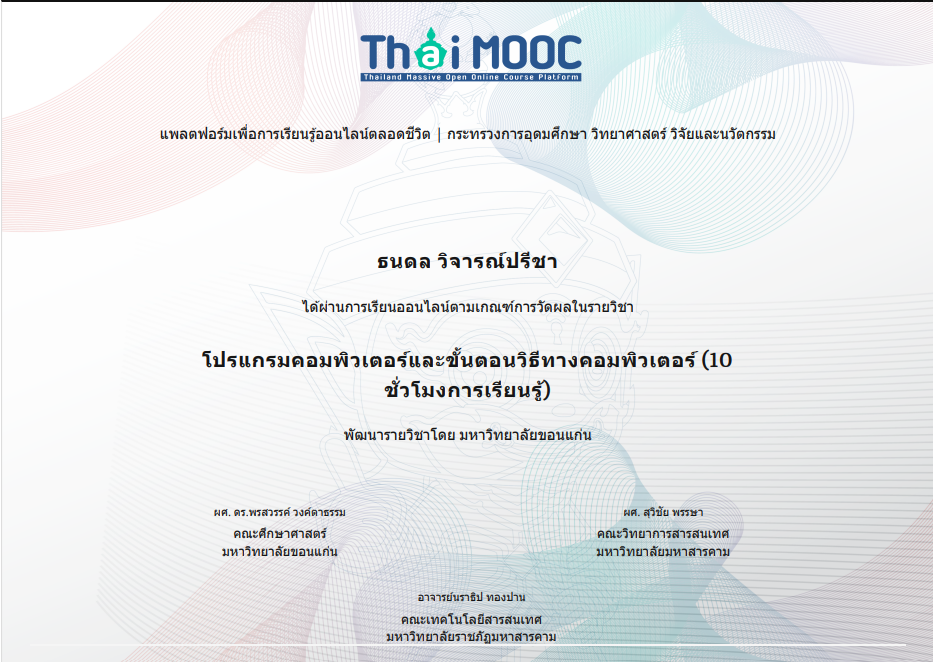
ผ่านการอบรมหลักสูตร
โปรแกรมคอมพิวเตอร์และขั้นตอนวิธีทางคอมพิวเตอร์(10 ชั่วโมงการเรียนรู้) พัฒนารายวิชาโดย มหาวิทยาลัยขอนแก่น
เมื่อวันที่ 30 มีนาคม พ.ศ.2565
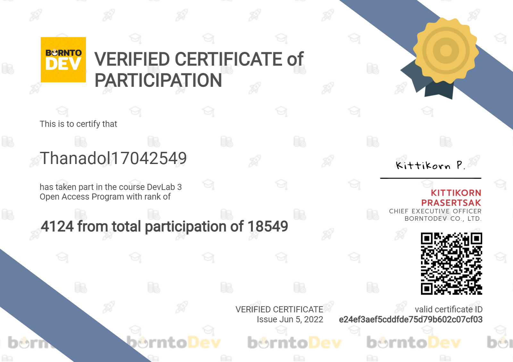
ผ่านการอบรมหลักสูตร
หลักสูตร DevLab 3 Open Access Program(เฉพาะผู้ที่ทำโจทย์ผ่าน 20 ข้อขึ้นไป)
เมื่อวันที่ 5 มิถุนายน พ.ศ.2565
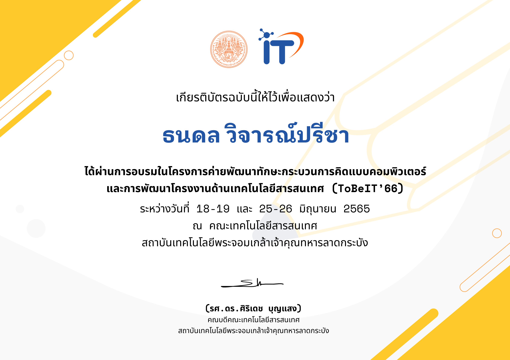
ผ่านการอบรมโครงการ
โครงการค่ายพัฒนาทักษะกระบวนการคิดแบบคอมพิวเตอร์และการพัฒนาโครงงานด้านเทคโนโลยีสารสนเทศ (ToBeIt'66)
ระหว่างวันที่ 18-19 และ 25-26 มิถุนายน พ.ศ.2565 ณ คณะเทคโนโลยีสารสนเทศ
สถาบันเทคโนโลยีพระจอมเกล้าเจ้าคุณทหารลาดกระบัง
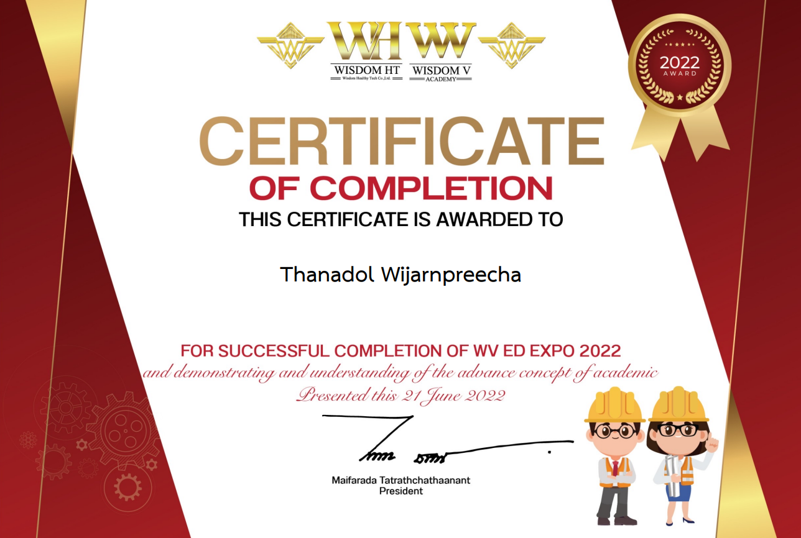
ผ่านการอบรม และทดสอบความรู้พื้นฐาน
หลักสูตรพัฒนาทักษะ สายงาน ด้านวิศวะ สถาปัตย์เมื่อวันที่ 21 มิถุนายน พ.ศ.2565
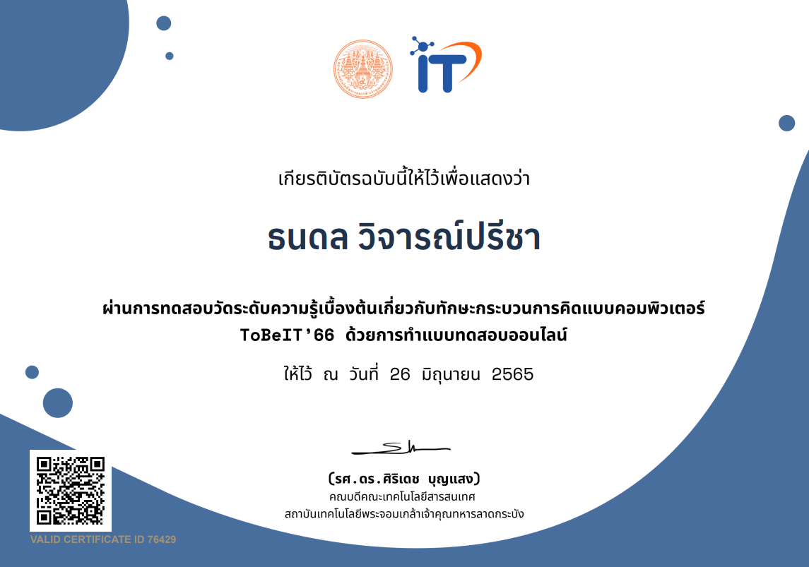
ผ่านแบบทดสอบ
การวัดความรู้เบื้องต้นเกี่ยวกับทักษะกระบวนการคิดแบบคอมพิวเตอร์ค่าย ToBeIT'66 ด้วยการทำแบบทดสอบออนไลน์
เมื่อวันที่ 26 มิถุนายน พ.ศ.2565
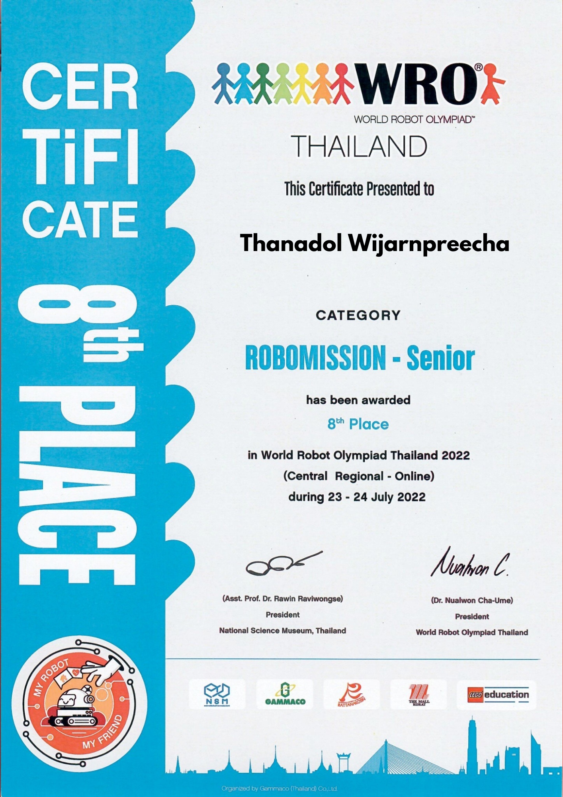
รางวัลชนะเลิศ อันดับที่ 8
การแข่งขันหุ่นยนต์ World Robot Olympaid 2022 ระดับภูมิภาคภาคกลางเป็นการแข่งแบบออนไลน์ โดยได้อันดับที่ 8 จาก 45 ทีม
ระหว่างวันที่ 23-24 กรกฎาคม พ.ศ.2565
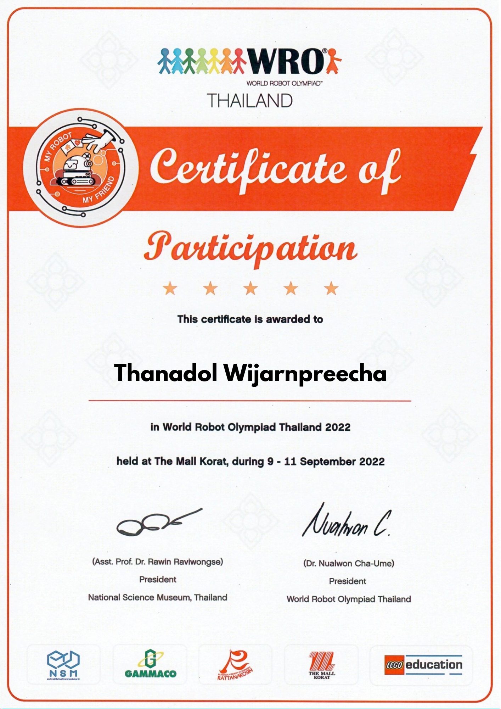
เข้าร่วมการแข่งขัน
การแข่งขันหุ่นยนต์ World Robot Olympaid 2022 ระดับชาติเป็นการแข่งแบบออนไซต์ โดยได้อันดับที่ 18 จาก 67 ทีม
ระหว่างวันที่ 9-11 กันยายน พ.ศ.2565 ณ เดอะมอลล์โคราช
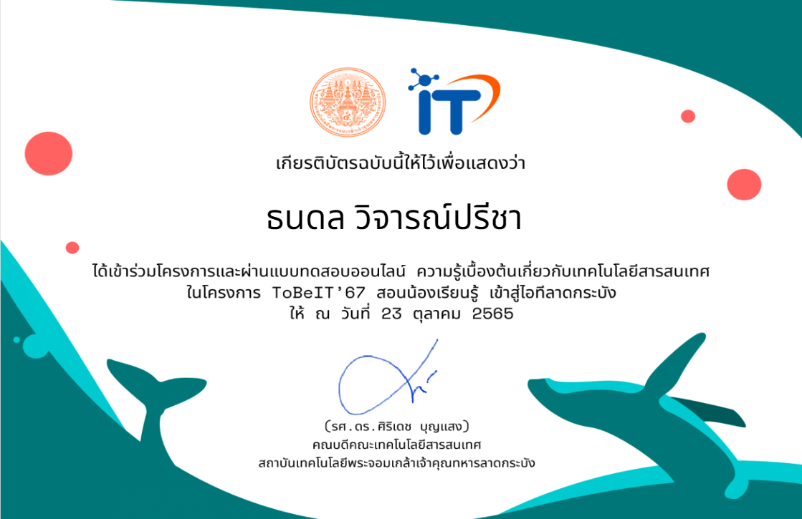
ผ่านแบบทดสอบ
ความรู้เบื้องต้นเกี่ยวกับเทคโนโลยีสารสนเทศ ในโครงการ ToBeIT'67สอนน้องเรียนรู้ เข้าสู่ไอทีลาดกระบัง ด้วยการทำแบบทดสอบออนไลน์
เมื่อวันที่ 23 ตุลาคม พ.ศ.2565
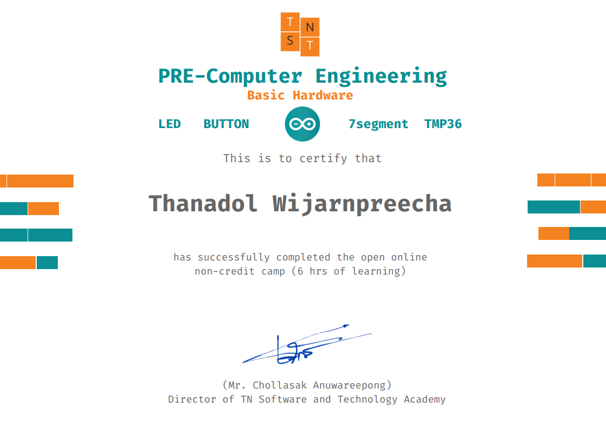
ผ่านการอบรม
กิจกรรมค่ายออนไลน์ "PRE-Computer Engineering"Basic Hardware (Arduino) เมื่อวันที่ 29-30 ตุลาคม พ.ศ.2565
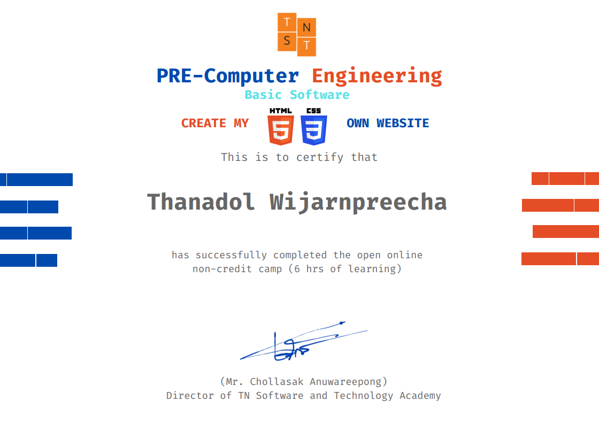
ผ่านการอบรม
กิจกรรมค่ายออนไลน์ "PRE-Computer Engineering"Basic Software (HTML & CSS) เมื่อวันที่ 29-30 ตุลาคม พ.ศ.2565
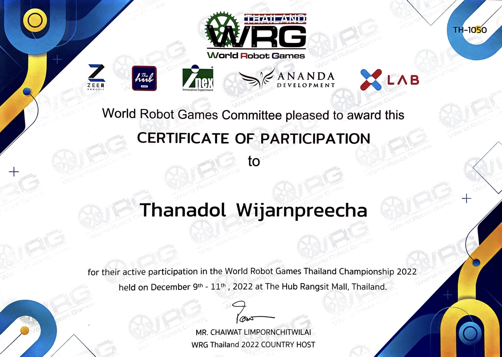
เข้าร่วมการแข่งขัน
การแข่งขันหุ่นยนต์ World Robot Game Thailand 2022เขียนโปรแกรม และใช้หุ่นยนต์ MicroBit ในการแข่งขัน
เมื่อวันที่ 9-11 ธันวาคม พ.ศ.2565 ณ เดอะฮับ รังสิต
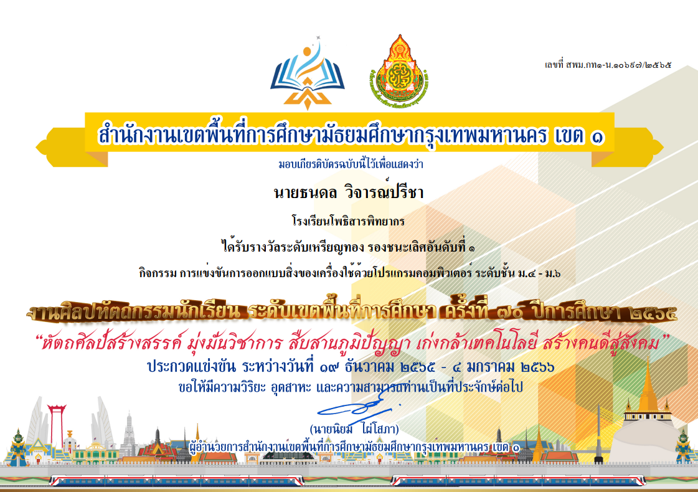
รองชนะเลิศอันดับ 1
การแข่งขันการออกแบบสิ่งของเครื่องใช้ด้วยโปรแกรมคอมพิวเตอร์ ระดับชั้น ม.4-ม.6งานศิลปหัตถกรรมนักเรียน ระดับเขตพื้นที่การศึกษา โดยโจทย์ของปีนี้มาในหัวข้อ
"ซุ้มขายน้ำงานกาชาด" โดยผมใช้โปรแกรม 3Ds Max ในการสร้างครั้งนี้
เมื่อวันที่ 27 ธันวาคม พ.ศ.2565 ณ โรงเรียนสามเสนวิทยาลัย
2023
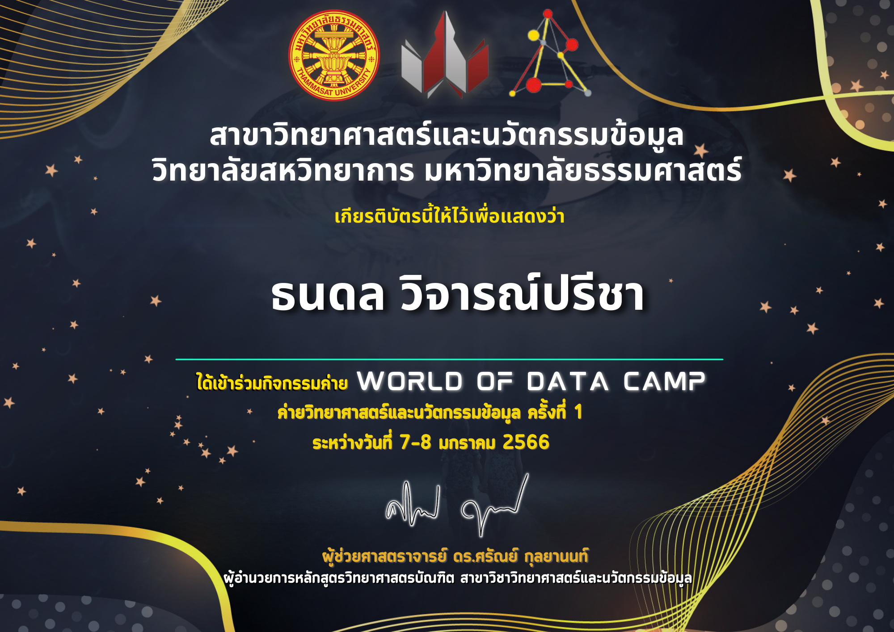
ผ่านการอบรมโครงการ
กิจกรรมค่าย World Of Data Camp ค่ายวิทยาศาสตร์และนวัตกรรมข้อมูล ครั้งที่ 1ระหว่างวันที่ 7-8 มกราคม พ.ศ.2566
ณ วิทยาลัยสหวิทยาการ มหาวิทยาลัยธรรมศาสตร์
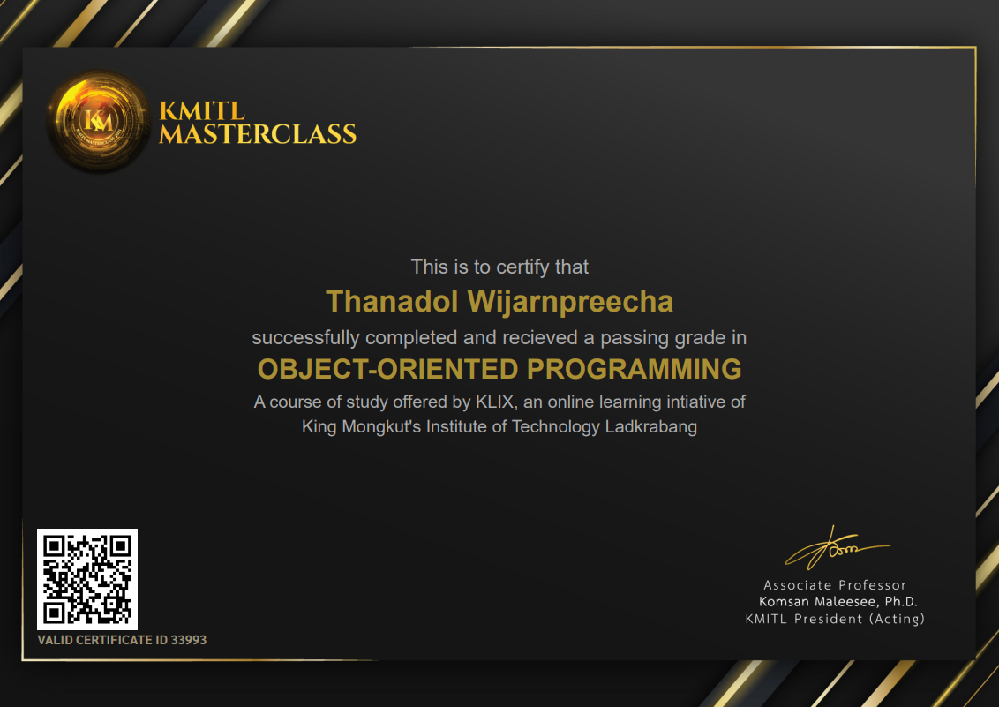
ผ่านการอบรม
หลักสูตร OBJECT-ORIENTED PROGRAMMING โดยใช้ภาษา Javaจาก KMITL MASTERCLASS ทำให้ผมได้รู้จักประเภทของ Object รวมถึงคำสั่งต่างๆ
เมื่อวันที่ 16 มีนาคม พ.ศ.2566
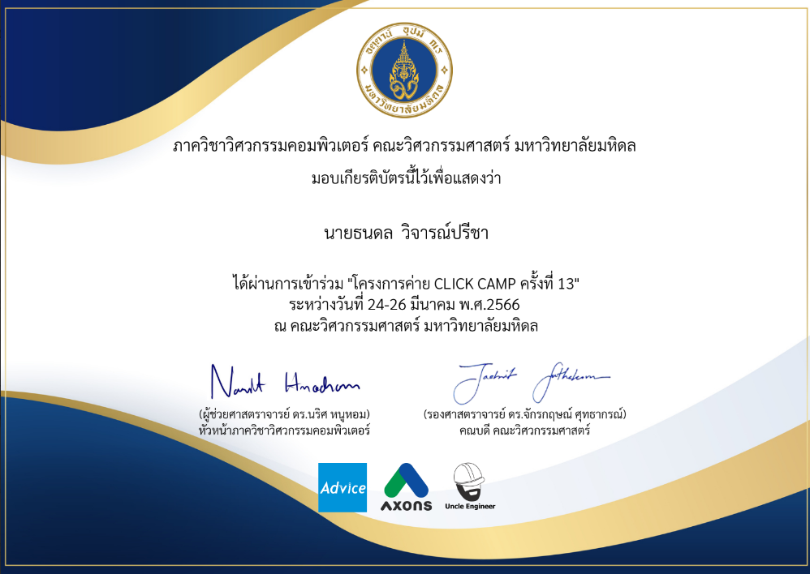
ผ่านการอบรมโครงการ
โครงการค่าย CLICK CAMP ครั้งที่ 13ได้เรียนรู้เกี่ยวกับ Public Key ,Private Key และการต่อวงจรไฟฟ้าเบื้องต้น
ระหว่างวันที่ 24-26 มีนาคม พ.ศ.2566 ณ คณะวิศวกรรมศาสตร์ มหาวิทยาลัยมหิดล
.jpg)
ผ่านการอบรมโครงการ
โครงการค่ายฝึกอบรมเชิงปฏิบัติการวิทยาการคอมพิวเตอร์ ครั้งที่ 15ได้เรียนรู้เกี่ยวกับ Microbit และ Python GUI
ระหว่างวันที่ 25-28 เมษายน และ 30 เมษายน พ.ศ.2566
ณ คณะวิทยาศาสตร์ สถาบันเทคโนโลยีพระจอมเกล้าเจ้าคุณทหารลาดกระบัง
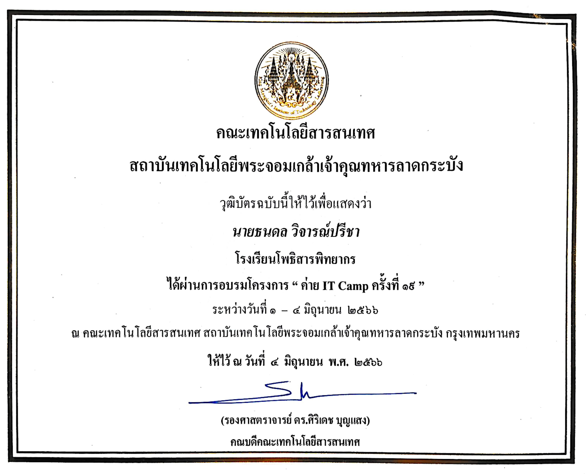
ผ่านการอบรมโครงการ
เข้าร่วมกิจกรรมค่าย ITCAMP ครั้งที่ 19 ศาสตร์สายไอทีด้าน Data Scienceระหว่างวันที่ 18-19 และ 25-26 มิถุนายน พ.ศ.2566
ณ คณะเทคโนโลยีสารสนเทศ สถาบันเทคโนโลยีพระจอมเกล้าเจ้าคุณทหารลาดกระบัง กรุงเทพมหานคร